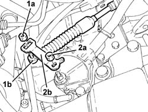
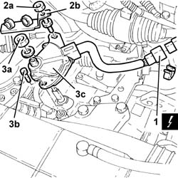
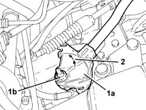
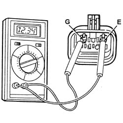
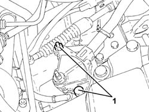
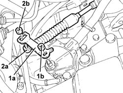
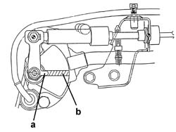

2135B64 automatic transmission control lever position sensor - r r
- Path
- Procedures > 21 GEARBOX > 2135 AUTOMATIC TRANSMISSION EXTERNAL CONTROLS > 2135B automatic transmission electrical controls > 2135B64 automatic transmission control lever position sensor - r r
- Kind
- repair procedure (removal / refitting; the operation number is the code)
- Applies to
- engines: 2.5 V6; all production periods
- Interactive page
- https://sloeber94.github.io/elrnDB-a156/en/#/3238009
Applies to: engines: 2.5 V6; all production periods; only with equipment: Q-System
 Removing
Removing
 Refitting
Refitting5530B52 Battery DRIP TRAY/SUPPORT - R.R.
Position the gear selection lever in position P.
1. Undo nut (1a) and disconnect the gear control cable (1b) from the lever.
2. Undo nut (2a) and remove the lever (2b).

Applies to: engines: 2.5 V6; all production periods; only with equipment: Q-System
1. Disconnect the electrical connection for the automatic transmission control lever position sensor and release the electrical wiring from the band.
 | Name | Connector |
|---|---|---|
1 | Automatic transmission solenoid unit |
2. Undo the nuts (2a) and remove the electrical wiring mounting bracket (2b).
3. Undo nut (3a), bolt (3b) and remove the automatic transmission control lever position sensor (3c).

Applies to: engines: 2.5 V6; all production periods; only with equipment: Q-System
Refitting
Removing1. Place the automatic transmission control lever position sensor (1a) back in its housing, tighten the nut (1b) and secure it with the shim.
2. Starting from position P (completely rotated anti-clockwise) rotate the lever pin to position N (pin is rotated two clicks anti-clockwise).

Applies to: engines: 2.5 V6; all production periods; only with equipment: Q-System
Connect a multimeter to pin G and E of the electrical connection on the automatic transmission control lever position sensor.
| Name | Connector |
|---|---|---|
- | Automatic transmission solenoid unit |

Applies to: engines: 2.5 V6; all production periods; only with equipment: Q-System
Rotate the automatic transmission control lever position sensor until the reading on the multimeter is in the centre of the continuity area.
1. In this position, tighten the 2 bolts securing the automatic transmission control lever position sensor.

Applies to: engines: 2.5 V6; all production periods; only with equipment: Q-System
Place the electrical wiring mounting bracket back in its seating and tighten its nuts.
Connect the electrical connectionfor the automatic transmission control lever position sensor and secure the electrical wiring with the band.
1. Place the lever (1a) in its housing and secure it with nut (1b).
2. Connect the gear control cable (2a) to the lever and secure with nut (2b).

Applies to: engines: 2.5 V6; all production periods; only with equipment: Q-System
5530B52 Battery DRIP TRAY/SUPPORT - R.R.
When refitting, carry out the following checks:
- you should be able to start the engine with the gear selector in position P or N;
- the signals on the instrument panel should correspond with the position of the gear selector lever;
- with the lever in position D the marker (a) on the bracket should correspond with the ridge (b) on the upper surface of the sensor.

Topics linked from this page (4)
- 5530B10 battery - r+r
- 5530B52 Battery DRIP TRAY/SUPPORT - R.R.
- L50 Automatic transmission solenoid unit
- L50A Automatic transmission solenoid unit ( ABS )